Une nouvelle façon de lire, helpRead vous permet tout simplement de vous remémorer des informations durant votre lecture. En un clic, ayez toutes les informations dont vous avez besoin pour comprendre l'entièreté de votre histoire.
Vous pouvez essayer une démonstration en ligne de ce que vous pourrez retrouver dans votre liseuse. Les mots affichés en gras sont cliquables, nous vous proposons une brève description de ce nom, se rapportant à ce que vous devriez savoir à ce moment précis du livre. N'ayez pas peur d'en apprendre de trop ou pas assez ! Vous saurez uniquement les détails dont vous avez besoin, la fin de votre histoire ne vous sera jamais dévoilée !
Ne soyez pas anxieux, utilisez votre liseuse comme d'habitude. La seule fonctionnalité que nous avons ajouté est simple: cliquez sur un mot que vous ne comprenez pas ou un nom que vous avez oublié pour consulter les informations dont vous avez besoin pour continuer à explorer l'univers que vous lisez !
Cliquez sur un nom en gras pour découvrir un résumé du personnage.
Chapitre 23
Waylander s’endormit, et ses rêves le conduisirent une fois encore sur la colline désertique du roi Orien. Il ouvrit les yeux et contempla le ciel et ses étoiles étrangères. — Bienvenue ! fit Orien. Waylander s’assit. Le vieil homme lui prit la main et la tapota paternellement. — Je suis content de toi, Waylander . Tu m’as rendu la foi, dans toute sa splendeur. Ton courage est grand, et tu as montré que tu étais un homme d’honneur. — Je ne suis pas à l’aise avec les compliments, répondit Waylander, détournant le regard et retirant sa main.
Dans cette section, vous trouverez tous les noms de vos personnages favoris et de vos lieux de prédilections qui se trouvent dans vos livres préférés. Il vous suffit de faire une recherche et de cliquer pour avoir une description complète de ces-derniers ou tout simplement de naviguer librement dans cette liste ordonnée alphabétiquement.
Le deuxième quadri de cette deuxième année de Design Web & Mobile a commencé officiellement le 03 février 2020 où nos professeurs nous ont présenté le sujet de notre TFA. Pour ce 03 juin 2020, chaque étudiant a dû produire un Petit Projet Utile avec diverses contraintes et demandes, ce projet devait être un service répondant à une problématique pouvant être recontrée quotidiennement.
Avant de se lancer dans la production de notre projet, il fallait trouver la thématique de celui-ci et, pour cela, deux de nos professeurs nous ont présenté des techniques pour explorer le champ des possibilités qui s'offrait à nous.
Tout d'abord et très simplement, notre premier professeur nous a demandé de réfléchir à quelles problématiques nous nous confrontons chaque jour dans notre vie quotidienne. Pour ma part, j'ai tout de suite pensé à des choses banales telles que:
Cette façon de fonctionner à peut-être été plus inspirante pour d'autre étudiant, malheureusement ce n'était pas mon cas et j'ai préféré utiliser la technique de mon deuxième professeur. Il nous a proposé de nous poser la question autrement, une autre manière de penser à des problématiques. Il nous a demandé ce dont on avait besoin dans notre vie de tous les jours et quels sont nos valeurs et nos combats quotidiens. C'est comme cela que de nouvelles thématiques me sont parvenues.
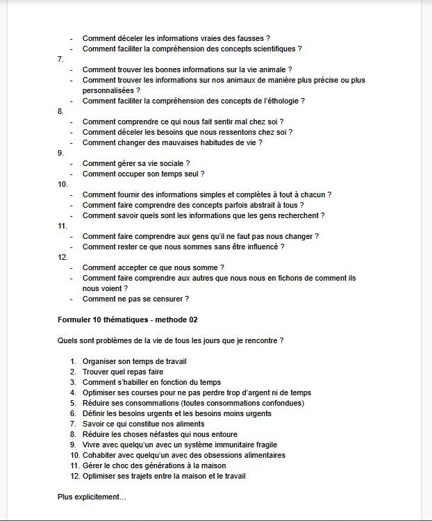Toutes ces thématiques n'étaient pas encore bien expliquées et le suite des recherches consistait à exprimer nos diverses thématiques avec la technique des 5W: Who, When, Where, What, Why. D'ici ont démarré nos présuppositions comme:
La phase de recherche s'est terminée avec un formulaire auquel nous avons dû répondre afin de faire valider nos thématiques par nos professeurs. Voici les choix que j'ai soumis aux professeurs et ceux qui ont été appréciés par ceux-ci. Mon choix s'est porté sur l'organisation de la lecture d'un univers complexe.
Mon sujet de départ me semblait clair, dans un univers aussi complexe que Star Wars ou le Seigneur des Anneaux, nous avons parfois besoin d'aide afin de trouver un ordre de lecture des différents bouquins afin de mieux comprendre tout l'univers. Je vous donnes un exemple:
Je veux commencer l'univers du Seigneur des Anneaux, dois-je commencer par le livre "La Fraternité de l'Anneaux" ou par "The Hobbit" ? Quel est le mieux pour comprendre l'intégralité de l'univers ?
Mon sujet n'était fondamentalement compliqué mais il fallait que je réfléchisse à une manière unique de présenté un sujet pouvant être présenté avec une simple liste. J'ai donc explorer plusieurs possibilités, interviewer quelques personnes et poster des formulaires sur les réseaux sociaux afin de récolter des informations.
Depuis décembre 2019, le Covid-19 était présent à la télévision et sur internet mais restait éloigné de notre chère Belgique, c'est seulement pendant les vacances de Printemps qu'il a commencé à arriver chez nous et c'est à la mi-mars que le verdict était tombé: la population belge était confiné chez elle jusqu'à nouvel ordre. Dans une situation pareille, interviewé des gens pour récolter des informations était compliqué et avoir des retours de nos professeurs aussi. Néanmoins, nos professeurs ont réussis à installer une infrastructure assez bien organisée sur le logiciel Discord. Aujourd'hui encore, je ne sais pas si nous avons eu plus de facilité que d'autres étudiants à surmonter cette épreuve grâce à notre quotidien qui était déjà en liaison avec les communications en ligne de part notre choix d'étude mais cela me semble plausible.
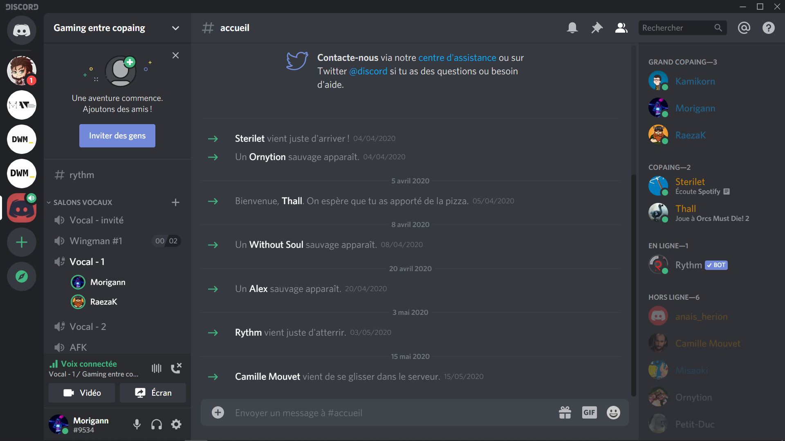Afin de palier à l'absence d'interaction sociale, beaucoup d'entre nous ont utilisé des formulaires pour récolter des informations, même si c'était parfois fastidieux. Au vu de mon sujet, j'ai intégré des groupes de lecture sur internet et j'ai partagé mes formulaires avec eux, ce qui a été très bénéfique pour moi. J'ai aussi eu beaucoup de chance d'avoir quelques amis avec qui j'ai passé une grande partie de mon confinement à discuter sur le logiciel Discord et qui ont participé à des pseudo-interviews et qui m'ont donné, parfois, des idées à exploiter.
Qu'est-ce qu'un projet sans changement plus ou moins brutal de son essence ? Je n'en sais rien, je n'ai jamais eu l'occasion de travailler sur un projet qui ne connaissait pas de changement majeur. Ceci dit, le changement n'est pas une mauvaise chose et mon projet a été meilleur grâce à une discussion avec l'un de mes professeurs. Je lui avais tout d'abord présenté mon sujet de base et en m'expliquant son point de vue, mon projet a été radicalement changé tout en gardant le thème de la lecture. Un projet destiné a n'être qu'un assemblage de liste de bouquin ordonné s'est changé en un dictionnaire plus ou moins complexe de mots et de noms spécifiques à chaque livre directement dans le fichier de ce-dernier ainsi qu'un site internet regroupant tous ces mots. La petite subtilité est que la définition des mots et l'explication des noms est directement relié au chapitre du livre comme dans cet exemple:
Dans Harry Potter et le Prisonnier d'Azkhaban, nous savons dans le chapitre 1 que Sirius Black est un tueur partisant de Voldemort qui s'est échappé de la prison d'Azkhaban et qu'il est le seul à avoir réussis. L'application permet de cliquer sur le nom de Sirius Black et de savoir uniquements ses informations tant nous n'en avons pas plus. Dans le chapitre 2, nous apprenons qu'il est également à la recherche de Harry pour le tuer. Si à ce moment-là, l'utilisateur clique sur le nom de Sirius Black, il aura toutes les informations connues dans le chapitre 1 et les informations connues dans le chapitre 2, c'est-à-dire qu'il veut tuer Harry Potter.
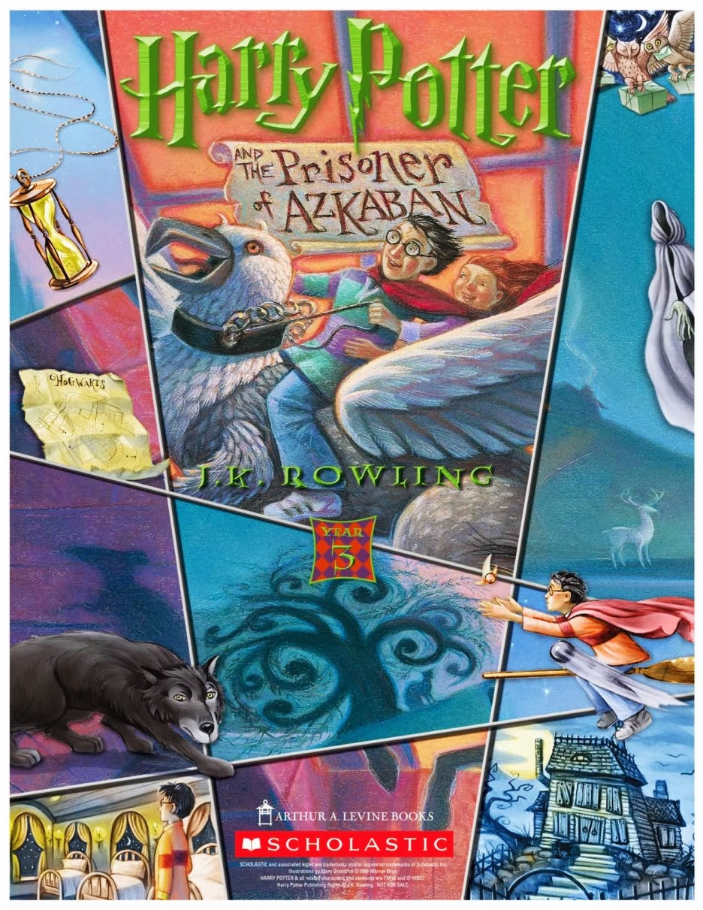Malgré ce changement, les formulaires que j'avais créé pouvaient être utiles pour le nouveau projet et je n'ai pas perdu trop de temps à récolter d'autres informations. Différents professeurs étaient enthousiastes à propos de ce changement et le niveau était monté d'un cran, tout comme le stress et la motivation !
En tout et pour tout, j'ai envoyé 3 formulaires distincts afin de récolter des informations sur les habitudes de lecture des personnes m'ayant répondu. Bien qu'ils étaient destinés au départ pour mon premier projet, ils m'ont été d'une grande utitlité et ils m'ont permis de ne pas créer d'autres formulaires dédiés au nouveau chemin que j'ai décidé d'emprunter.
Le premier formulaire m'a permis d'identifier essentiellement que les lecteurs sont souvent perdus quand ils se plongent dans un univers vaste. L'idée de proposer un résumé des informations que nous connaissons à un certain moment de l'histoire me paraîssait donc justifié et même que c'était une bonne idée et cela m'a surtout conforté dans ma nouvelle idée.
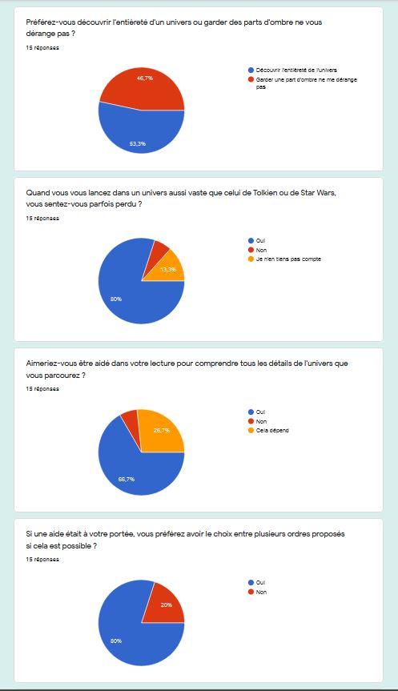Le deuxieme formulaire a été un peu plus interressant pour la nouvelle direction du projet. Les résultats ont démontrés que les lecteurs sont interessés par une description des personnages et la carte du monde principalement. L'ordre de lecture, les bestiaires, ect... Ne sont pas du tout les aides dont les lecteurs ont besoin en premier lieux. De plus, les lecteurs veulent que cela aille très vite, que l'information dont ils ont besoin se présente à eux rapidement pour ne pas interrompre la lecture trop longtemps. Proposez un peuso-dictionnaire dans le livre numérique directement est donc une solution appropiée.
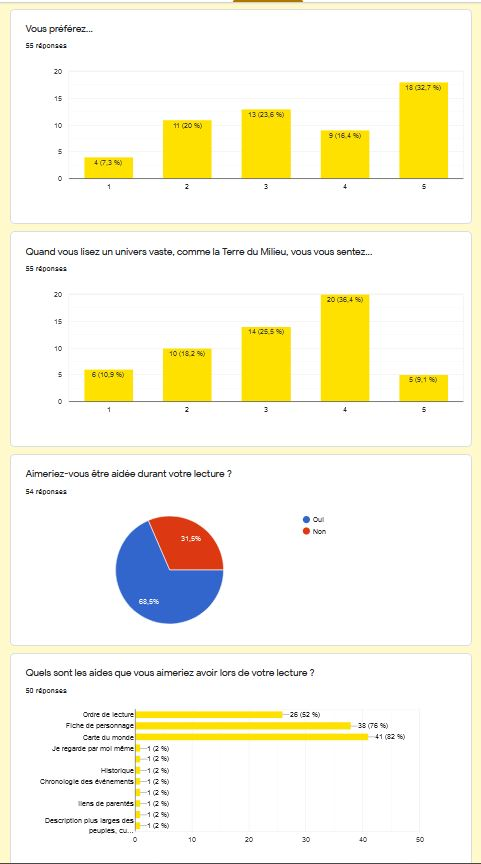Le dernier formulaire était une confirmation des deux autres plutôt qu'un moyen de découvrir de nouvelles informations sur les lecteurs. Il a donc prouvé que la description des personnages était primordiale et que donc il était vital de l'intgrer dans mon dictionnaire. De plus, les lecteurs veulent pouvoir consulter des informations durant la lecture en majorité, l'intégration du dictionnaire dans le livre numérique n'est donc pas une option mais plus une obligation pour répondre aux besoins des lecteurs.
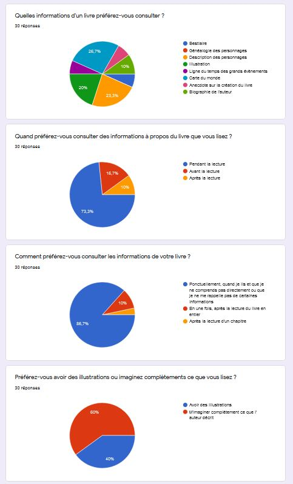En regroupant ces 3 formulaires, j'ai pu en tirer des conclusions intéressantes. Je savais qu'elles étaient mes tâches principales et celles qui passaient en second plan. C'est ainsi que la consultation du pseudo-dictionnaire pendant la lecture et la recherche des mots sur le site internet sont devenues mes principales prioritées. Consulter la fiche du service passait au second plan ainsi que les illustrations qui sont devenue inutiles tout comme l'odre de lecture qui était l'objectif de base du projet.
Tout les feux étaient au vert, j'avais un projet qui me motivait, des informations à utiliser pour le développer, des professeurs enthousiastes et des top tasks bien fondées. Il ne me restait plus qu'à écrire le contenu et à coder l'ensemble du projet... Sous certaines contraintes malgré tout avec des critères de réussite imposée par nos professeurs ! Malgré tout, les critères n'étaient pas nouveaux et cela n'a pas fait frissoner de peur les étudiants surtout que nos professeurs avaient créér un journal de bord avec de jolies petites cases à cocher quand chacune de nos tâches étaient accomplies, que demander de plus ?
Pour bien démarrer mon projet, je devais avant tout... Choisir un livre et le lire pour créer une base de données précise. Pour me faciliter la tâche, j'ai pris le livre "Waylander" de David Gemmell qui est sûrement mon livre favori. J'ai pris un chapitre qui était assez loin dans l'histoire pour avoir des descriptions fournies mais pas le dernier chapitre sinon les descriptions du chapitre de mon livre allaient être exactement les mêmes que celles retranscritent sur mon site internet, le chapitre 23 s'est imposé à moi tout simplement. C'est ainsi que mon travail de recherche a continué, dans le coeur d'un bouquin d'heroic fantasy, n'est pas merveilleux ?
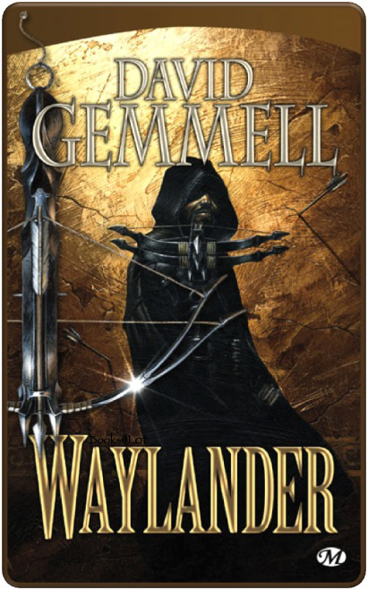Pour créer mon dictionnaire, j'ai tout de suite pensé à la création d'un fichier JSON qui me permettrait de mettre à jour comme je le souhaite mes données. J'ai donc tout de suite créer mon fichier en l'ordonnant de manière alphabétique pour plus de facilité. J'ai répertorier chaque mot ou nom du chapitre 23 pour commencer pour ensuite développer leurs explications et par après j'ai répertorier les mots ou les noms de ces explications pour leur donner leur propre définition à eux aussi. Ce qui m'a donné un JSON assez fournis pour pouvoir travailler dessus.
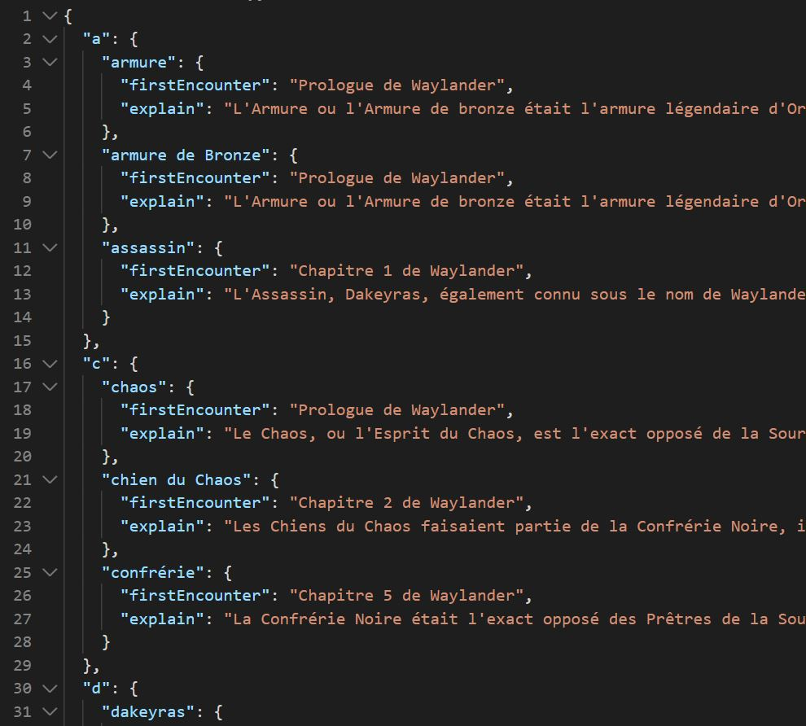Avant de commencer à réfléchir au côté technique, il me fallait créer des User Journey et des prototypes papiers pour comprendre où les utilisateurs pouvaient coincer, ce qui pouvait nuire à leur expérience sur mon site internet et pendant la lecture de ma démo sur leur liseuse. J'ai donc imaginé plusieurs User Journey où l'humeur de mes utilisateurs fictifs étaient illustrées par de simples smileys et des étapes décritent point par point. Après avoir rencontré plusieurs problèmes, j'ai créé de nouveaux User Journey en apportant des modifications afin de palier à ces problèmes. J'ai recommencé à plusieurs reprises jusqu'à avoir réussi à résoudre un maximum de problème.
J'ai attaqué les prototypes papiers après avoir mis en lumière les techniques que je devais absolument employer pour que les utilisateurs, peu importe leur support, puisse naviguer dans mon site en toute sérénité. C'est ainsi que j'ai imaginé plusieurs sites et plusieurs epub pour trouver la meilleure solution. Malgré que des modifications se soient manifestées en cours de développement, le prototype papier final est assez proche de mon produit final.
Ayant déjà mon pseudo-dictionnaire de fait, j'ai réfléchis à ce que j'allais écrire sur mon site pour vendre mon produit. Une fois la réflexion à propos de mon contenu, j'ai décidé de tout écrire en markdown pour hiérarchiser tout mon texte, voir ce qui devait être mis en évidence et déjà réfléchir à comment organiser mon html. J'ai modifié plusieurs fois l'ordre de mon contenu pour avoir une cohérence entre le tout mais cela a été payant et je me suis retrouvée avec une hiérarchie qui ne sautait mais des ordres d'importance.
Sans trop attendre, j'ai commencé à écrire mon code en html sans avoir trop de soucis pour ce qui est de la hiérarchie. Je ne me suis focalisée uniquement sur cette base pendant un moment pour être sûre de ne pas devoir y revenir plus tard et perdre du temps. Malheureusement, je l'ai modifié plus tard pour créer un site qui n'a pas plusieurs page html mais une seul qui regroupe toutes les pages, avec un petit script JavaScript.
C'est bien d'avoir des données mais c'est encore mieux de les partager ! Donc j'ai commencé à réfléchir à la manière de présenter mon pseudo-dictionnaire et je suis partie sur un système simple: le filtre. Tous les mots allaient être présent sur la page mais il y aurait un filtre où l'utilisateur taperait le mot qu'il recherche et le dictionnaire se mettrait à jour automatiquement à chaque lettre. Facile du premier abord mais ça s'est avéré un peu plus complexe que cela. Néanmoins, le résultat en a valu la chandelle, j'ai un filtre qui montre les mots de notre recherche en temps réel, une mise-à-jour de ce pseudo-dictionnaire automatique si je change ne serait ce qu'une lettre dans mes données de base et une mise en page CSS automatique également.
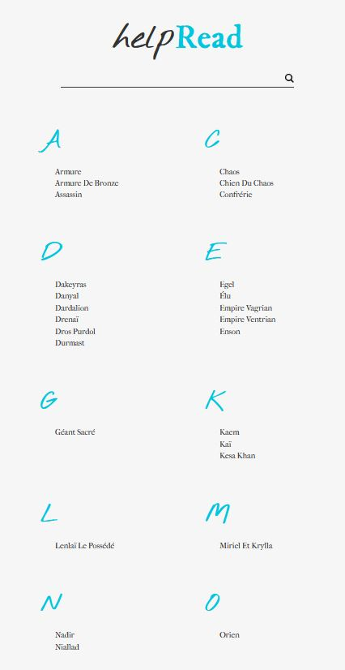Une fois cela fait, je n'avais que mon dictionnaire en ligne de réalisé et il me fallait travailler sur une démo du dictionnaire dans le livre numérique. Pour ce faire, un de mes professeurs m'a partagé un lien qui m'a aidé dans un premier temps à réaliser un epub de base. La prise en main n'était pas compliquée en soit, le problème est arrivé quand j'ai voulu créer une popup à l'intérieur de l'epub. J'ai ainsi découvert que le JavaScript ne s'utilisait pas dans les fichiers comme ceci mais qu'il y avait une alternative car les epubs sont créés par du xhtml, un langague certe très proche de l'html mais néanmoins un peu différent qui m'a permis de réaliser des popup directement dans l'xhtml. J'étais un peu déstabilisée et j'ai fait plusieurs tentatives cependant mon epub est toujours en cours de création, je n'ai pas encore trouvé comment mettre en page d'une façon correcte et je n'ai réussis qu'une seule fois à créer une popup mais mes footnotes restaient visibles.
Le design n'est malheureusement pas ma tasse de thé. Cependant, je pense avoir trouvé un accord parfait avec mon projet. Pour être efficace et accessible à tous, mon site internet devait pouvoir être visité sur mobile, tablette, ordinateur mais aussi... Sur liseuse ! Leur particularité est qu'elles sont monochromes donc je dois penser au fait que mon site doit pouvoir être relativement le même malgré qu'il ne soit qu'en noir et blanc sur un support. Pas besoin de se casser la tête à outrance avec un design ultra travaillé avec plusieurs couleurs.
Dans cette optique, j'ai pensé à un design assez simple où le header et le footer serait dans une autre couleur que le reste du contenu, chaque couleur étant en contraste avec l'autre. Néanmoins, pour les supports qui ne sont pas monochromes, j'ai ajouté une couleur vive qui donne un peu de vie au site pour le nom du produit ou encore les interactions que l'utilisateur peut rencontrer sur mon site.
En gardant en tête que, sur une liseuse, les contrastes sont moins marqués, j'ai commencé à réfléchir aux polices que j'allais utiliser. Je voulais partir sur le contraste d'une écriture manuscrite et d'une police qui rappelait celle utilisée par les machines à écrire. Pour l'écriture manuscrite, il faut avouer que c'est un choix risqué pour le support de liseuse mais cela me plaisait tellement que j'ai voulu courrir le risque. J'ai donc fait plusieurs recherches en cherchant tout d'abord une écriture manuscrite que j'aimais pour ensuite sélectionner des polices typées machine à écrire et ensuite j'ai comparé les hauteurs de X pour choisir la combinaison parfaite. De là, en plus de les utiliser sur mon site en temps que police pour le texte, j'ai décidé de les utiliser pour créer mon logo. Un logo très simple et contrasté qui se décline en 2 catégories, le logo type îcone et le logo de base, ces deux catégories pouvant être utilisée sur du noir ou sur du blanc.
En ayant cela en tête, j'ai essayé plusieurs taille de police et plusieurs interlignages pour mon rythme vertical. Certain était correct, d'autre affreux mais j'ai choisis un rapport de hierarchie de 1.333 au final. J'ai ainsi utilisé ce rapport pour mes espaces entre chaque titre, chaque paragraphes, ect...
Pour terminer avec mes prototypes, j'ai recherché mes couleurs. Je suis donc partie sur mon idée de départ avec une couleur se rapprochant du noir et une autre du blanc pour avoir une liaison, toujours, entre les différents supports. Pour tous les supports non-monochromes, j'ai réfléchis à une troisième couleur.
J'avais tout d'abord pensé à un rouge qui tirait vers le bordaux, ce qui fonctionnait bien avec le blanc mais absolument pas avec le noir. J'ai donc réfléchis plus profondément et j'ai pensé au bleu, bleu du rêve et des songes que nous rapportent les histoires. Cela fonctionnait assez bien avec la couleur sombre mais malheureusement moins bien avec la couleur claire. C'était dommage vu que c'était la couleur parfaite de part sa signification... J'ai donc décliné le bleu de plusieurs façon jusqu'à ce que je trouve le bleu qui me semblait parfait.
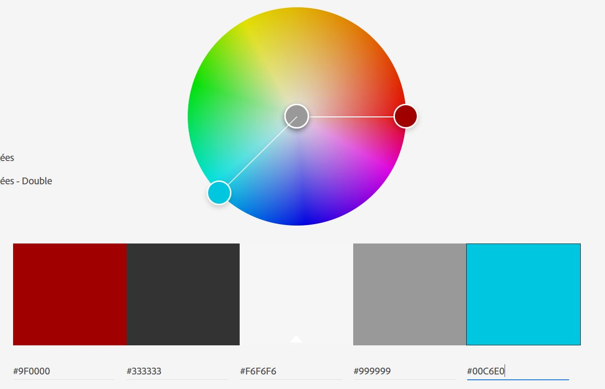 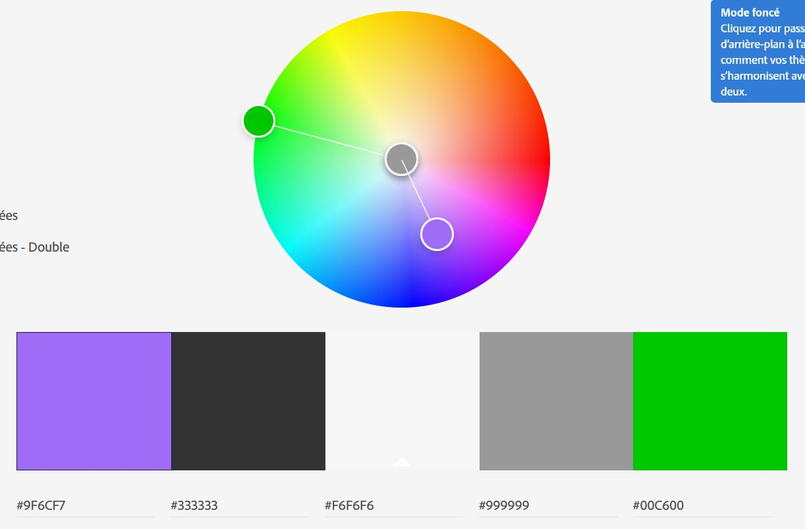 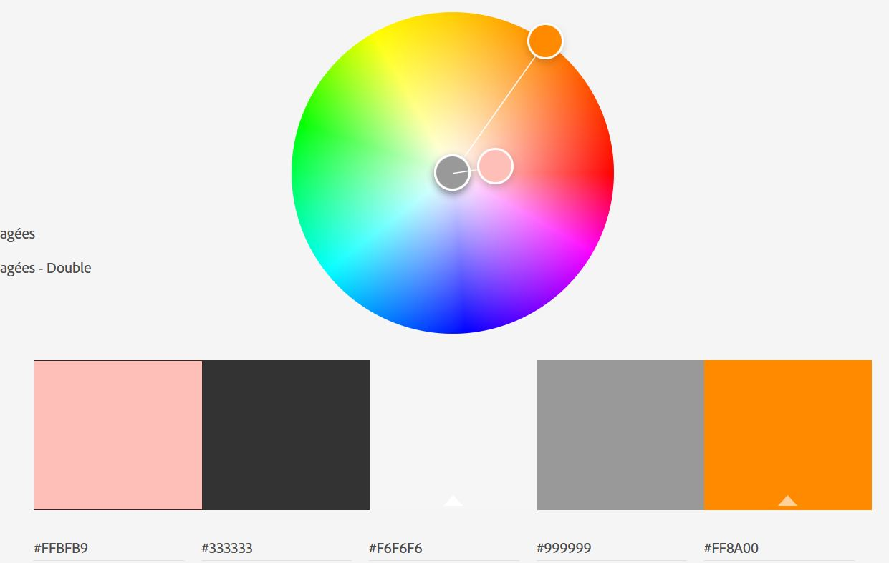Avec cette police, cette hiérarchie et ces couleurs, le prototype numérique était la suite logique ! J'ai donc commencé part placer mon contenu avec mes rapports hiérarchiques et mon rythme vertical pour ensuite placer les polices et enfin mes couleurs. Pour le design mobile, c'était assez facile au vu de mon contenu mais c'est niveau du design desktop que je n'arrivais pas à me décider. J'ai donc tester différentes grilles CSS pour finir par choisir la meilleure.
J'avais comme idée d'intégrer ma vidéo à mon site internet pour montrer l'utilisation du produit. Malgré que ça ne donne pas spécialement envie à cause de l'affichage des liseuses, j'ai essayé tant bien que mal à créer une vidéo attractive sans savoir pour l'instant comme l'intégrer comme je le voulais dans mon site internet. Je savais l'emplacement mais je ne savais pas si j'allais réussir à l'intégrer sans les contrôles de vidéos.
Pour réaliser ma vidéo dans les règles de l'art, j'ai tout d'abord créé un storyboard pour savoir où je me dirigeais et ce que je voulais montrer dans ma vidéo. Il a été rapidement créé mais il me restait une chose essentielle à faire... Analyser le comportement des liseuses. J'ai donc pris ma vieille liseuse, je l'ai allumée plusieurs fois, j'ai regardé les spécificités mais ça me semblait bizarre, peut-être qu'elle était trop vieille ? J'ai donc chercher des vidéos de présentation de liseuse et j'ai remarqué... Qu'elles étaient toutes comme ça ! Je pouvais dire au revoir au style rapide et fluide que je révais et j'ai décidé de garder un style réaliste de la liseuse pas très glamour.
Les choses sérieuses allaient commencer, toutes mes promesses et mes espoirs allaient ils être à la hauteur des attentes de mes professeurs et des miennes ? J'ai d'abord essayer de tout intégrer sans le moindre design et même là, c'était pas toujours facile de ne pas avoir d'erreur. La Home page était facile a rélisée, c'est la page de recherche qui a été la plus fastidieuse car je n'ai pas de html pré-écrit pour cette page, tout est généré par le JavaScript.
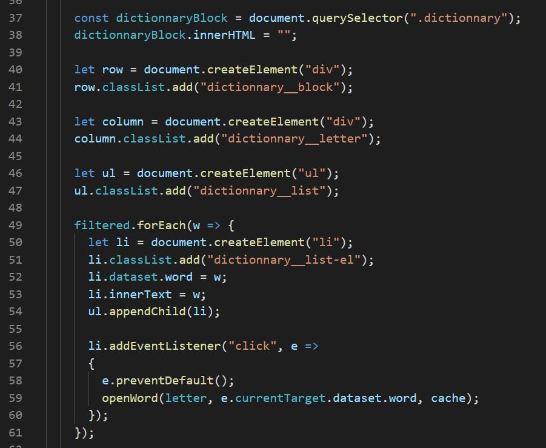Malgré cette période particulière et les nombreux problèmes que j'ai pu rencontrer, je pense et j'espère m'en être assez bien sorti. J'ai explorer de nouvelles techniques et j'ai du faire preuve de créativité pour adapter mon site à un nouveau support. Cette période m'a assuré que j'étais très indépendante, je n'ai pas eu beaucoup de rendez-vous avec mes professeurs et pas seulement parce que j'avais que peu de temps à leur accorder mais aussi parce que je ne ressentais pas le besoin d'avoir leur accord pour chaque étape que je finissais, à tord ou à raison, l'avenir nous le dira.
J'ai beaucoup apprécié cette liberté malgré un manque de motivation parfois. Comme beaucoup d'autres étudiants, je me suis retrouvée parfois sans envie d'avancer à cause de cette période compliquée. Mais j'en retire surtout quelque chose de positif, ça nous a montré que seul on peut y arriver et qu'entre étudiants, on est toujours prêts à s'entre-aider !